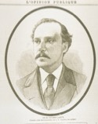
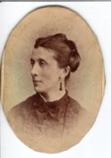

Beaubien-Perrault-Benington - Family Card
Beaubien-Perrault-Benington - Family Card
Hubert Casimir Hospice Nazaire Larue(7 Mar 1809 - 3 Nov 1871)Hon. Philippe Panet(28 Feb 1791 - 15 Jan 1855)
Adélaide Roy(14 Nov 1814 - 1 Mar 1894)M. Luce Casgrain(5 Aug 1802 - 11 Jun 1870)
m. 10 Jul 1860, Notre-Dame, Québec, Québec

b. 24 Mar 1833, St-Jean, Ile d'Orléans, Québec
d. 25 Sep 1881, Québec, Québec
br. 28 Sep 1881, St-Jean, Ile d'Orléans, Québec
occ. médecin, auteur, chimiste
edu.
rel.
Flags.

b. 8 Nov 1839, Québec, Québec
d. 29 Oct 1905, Québec, Québec
br. Oct 1805, Cimetière St-Charles, Québec, Québec
occ.
edu.
rel.
Flags.
Children
M. Alphonsine Eugenie Larue(7 Apr 1861 - 22 Aug 1879)
M. Louise Henriette Larue(22 Sep 1862 - 18 Feb 1911)
Lucien Philippe Augustin Francois Alexandre Hubert Larue(9 May 1864 - 27 Jul 1875)
Louis Joseph Henri Larue(19 Apr 1866 - 21 Jul 1925)
> M. Josephine Larue(24 Mar 1868 - 23 Nov 1957)
M. Luce Mathilde Larue(6 May 1870 - 7 Jul 1870)
Anne M. Hermine Larue(27 Jul 1873 - 14 Aug 1873)
M. Luce Adélaide Larue(14 Aug 1871 - 25 Apr 1897)
Paul Philippe Eugène Larue(17 Jan 1875 - 5 Nov 1943)
Luc Joseph Larue(11 Feb 1877 - 21 Dec 1921)